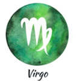

LOS SIGNOS ZODIACALES
LOS SIGNOS ZODIACALES Hecho por: Jesús Maximiliano Morales Pintor Al727677

Los signos de Tierra están íntimamente relacionados con las cosas físicas y el mundo material, y están caracterizados por un notable pragmatismo,
tienen el espíritu extremadamente lógico y racional, metódico.
'Yo tengo'
Viven la vida en su intensidad máxima, siempre buscando el placer,
siendo asociados a todo lo que es bueno: sexo, comida, lujo,
entre otros placeres de la vida.
Es persistente, materialista, práctico y obstinado, sin embargo,
puede presentarse posesivo

'Yo analizo'
Es el más perfeccionista de los signos del zodiaco.
valoran el sentido práctico, el pensamiento lógico y
la atención al detalle, siendo extremadamente críticos y analíticos.
Es uno de los signos más sexual del zodiaco.
Pueden ser demasiado críticos y no tolerar errores.
'Yo construyo'
Es el más ambicioso de los signos del zodiaco.
Dotado de ambiciones específicas y metas bien definidas,
el capricorniano tiene como principales características la concentración,
la racionalidad, la responsabilidad, la determinación y la atracción por desafíos.
Las personas que han nacido bajo este signo no son de quedarse sentadas esperando que las cosas simplemente sucedan.
Cuando han decidido seguir un rumbo determinado lo harán sin que nadie los detenga y hasta las últimas consecuencias.
'Yo conquisto'
Son aquel tipo de personas imposibles de ignorar, después de todo,
son dueños de una personalidad asertiva e idealista,
impulsada por un ego poderoso.
Lo que no falta en el ariano es actitud, fuerza de voluntad,
coraje y energía.
'Yo creo'
Signo regido por el Sol, los leoninos irradian luz y calor.
Naturalmente, son exhibicionistas, egocéntricos, les gusta aparecer
y ser el centro de atención. También pueden ser intransigentes,
arrogantes y autoritarios.
Aunque son generodos, donantes, organizados y vibrantes en sus ideales.
'Yo castigo'
Son grandes incentivadores y adoran motivar a las personas. Siempre buscan
posibilidades que respondan a sus interrogantes más profundos con espontaneidad y
optimismo, como un gran
amante de la libertad y la inquietud.
Casi siempre van más allá de la mediocridad y superan las expectativas.
Poseen un gran corazón y esto les hace involucrarse más en los problemas ajenos.
Los sienten como suyos, lo cual afecta a las decisiones que toman cuando, por ejemplo, están observando una injusticia.
'Yo descontrolo'
Creación, innovación y originalidad son palabras clave del signo de acuario.
Con ojos en el futuro, los acuarianos están siempre abiertos a las
nuevas ideas, abusan de las teorías y su visión va más allá de lo habitual,
de ahí la fama de ser el signo de los inventores.
'Yo relaciono'
Considerado el más equilibrado de los signos del zodiaco, es
representado por una balanza.
Son sociables, diplomáticos y flexibles, sin embargo, tienen una personalidad
fácilmente influenciable. Tanto que no es difícil ver un librano indeciso.
Pero, una vez que éste decide algo, difícilmente cambiar de idea.
'Yo pienso'
Son conocidos por su don natural para la comunicación.
Siempre hablantes y llenos de ideas, los geminianos son inteligentes, elegantes,
versátiles y siempre están aptos para aprender.
Aunque pueden ser bastante inestables y tienden a cambiar muy deprisa.
El ritmo del agua puede ser tranquilo o agitado, así como los signos de agua que dependiendo del signo en específico, puede cambiar de emociones.
La hipersensibilidad que manifiestan los signos de agua es tal que en ocasiones les cuesta trabajo contener sus emociones.
En repetidas ocasiones se dejan llevar por ellas como una marea que viene derecha hacia ellos y ante la cual se sienten impotentes.
'Yo siento'
Cáncer es el más sentimental de los signos del zodiaco.
Son sensibles, intuitivos, emotivos
y proporcionan las cualidades necesarias para el crecimiento y
la seguridad,estimulando una conciencia más profunda
de las necesidades emocionales.
Aprecian la familia, la afectividad y la intimidad.
'Yo imagino'
Se centran en el pensamiento colectivo, valorando el todo en lugar de la parte.
Sus principales características son la solidaridad, la intuición y la sensibilidad.
No presentan problemas para adaptarse a nuevas situaciones, les gusta ayudar y tiene
el don de resolver las cosas por intermedio de su intuición.
'Yo transformo'
Son esforzados, pasionales por naturaleza y precursores de cambios, buscando siempre
evolucionar y alcanzar sus objetivos, aunque eso implique en una transformación profunda y dolorosa.